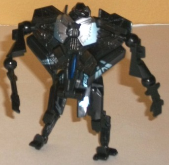

Allegiance : Autobot
Size : Legend
Difficulty of Transformation : Very Easy
Color Scheme : Red, blue, black, and some white, silver, and yellow
Individual Rating : 7.1
 Smokescreen
vs. Starscream (RotF Legends Vs. Pack) [Target Exclusive]
Smokescreen
vs. Starscream (RotF Legends Vs. Pack) [Target Exclusive]
Set Price
: $10 (U.S.)
Overall Rating
: 5.4
 Smokescreen
Smokescreen
Allegiance
: Autobot
Size
: Legend
Difficulty of Transformation
: Very
Easy
Color Scheme
: Red, blue, black,
and some white, silver, and yellow
Individual Rating
: 7.1
(NOTE: Because this is a repaint, this is not a full-blown review. This mainly covers any changes made to the mold and the color scheme, and merely compares it to the Universe 2.0 Legends class Rodimus toy. For a review on the mold itself, read the review of the Universe 2.0 Legends class Rodimus toy here .)
Unlike the
mainline
release
of Smokescreen, this version is a bit more obvious of an homage
to his
G1 version
, complete with a red
roof, blue sides, and the number "38" decal on the car doors. Like on the
original Smokescreen, this works fairly well as a color scheme, and is
certainly more bright and colorful than most of the Movie toys-- only the
black, which is a secondary color, is dark. That said, the absence of a
white stripe between the blue and red in vehicle mode takes away a little
something from the overall scheme, though I understand this decision could've
been made because of the tiny size of the toy. Smokescreen also could really
use a few more varied paint apps in robot mode-- even though a fair amount
of paint is used to make parts of him blue, besides the face there really
isn't any detailing to accentuate his mold detailing. The main problem
I have with this paint job, though, is that it simply doesn't feel right
on the Rodimus mold. Many repaint homages make sense-- but other than this
one being a sportscar in vehicle mode, this mold doesn't work that well
as Smokescreen. And, given how relatively mainly repaint homages Smokescreen
has gotten in the past couple of years, it seems a bit superfluous on top
of that.
No mold changes have
been made to this version of Smokescreen.
Starscream

Allegiance
: Decepticon
Size
: Legend
Difficulty of Transformation
: Very
Easy
Color Scheme
: Black and some light
metallic teal, dull blue, red, and silver
Individual Rating
: 3.7
(NOTE: Because this is a repaint, this is not a full-blown review. This mainly covers any changes made to the mold and the color scheme, and merely compares it to the original Movie Legends class Starscream toy. For a review on the mold itself, read the review of the original Movie Legends class Starscream toy here .)
This redeco of Legends
Starscream is made up a lot like the K-Mart exclusive
Nebular
redeco
in that the same familiar teal-ish tattoos are on a darker jet
mode. The tattoos on this version are less "minty" and more blue, however,
which I think goes with this Starscream's black plastic quite well-- it's
quite a nice shade of teal, and I wish some more of the tattoos were visible
on Starscream's robot mode. The silver paint also goes well with the black,
but honestly my favorite part of the color scheme are the bits of dark
blue-- that color's only on the jet cockpit and Decepticon symbol, but
it looks REALLY good against the black for some reason. It's another dark
color, so you don't think it would, but surprisingly it just looks
right
for
a reason I can't quite put my finger on. I wish a bit more of the blue
had been used, perhaps in place of the silver. Regardless, it's still an
excellent color scheme that catches the eye easily.
No mold changes have
been made to this version of Starscream.
This set is probably one that even most collector-oriented Transformers fans can pass up-- you've got a decent mold with an ill-fitting homage paint job (Smokescreen) and an awful mold with a good paint job (Starscream) here. Neither particularly scream "BUY ME NOW!", since you aren't getting any overall discount from buying them both in the same package. If you're a particularly huge Legends class fan, this set may be worth a look; otherwise, it's a pretty easy pass.
Review by Beastbot